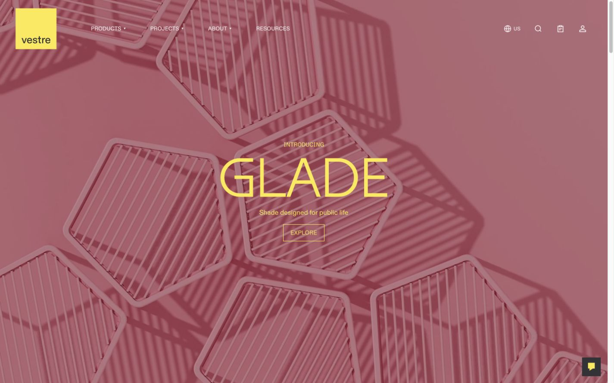
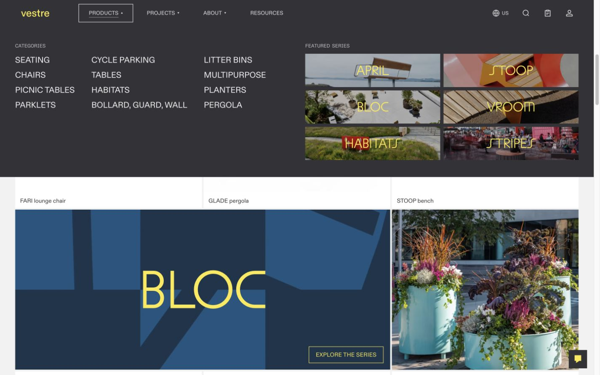
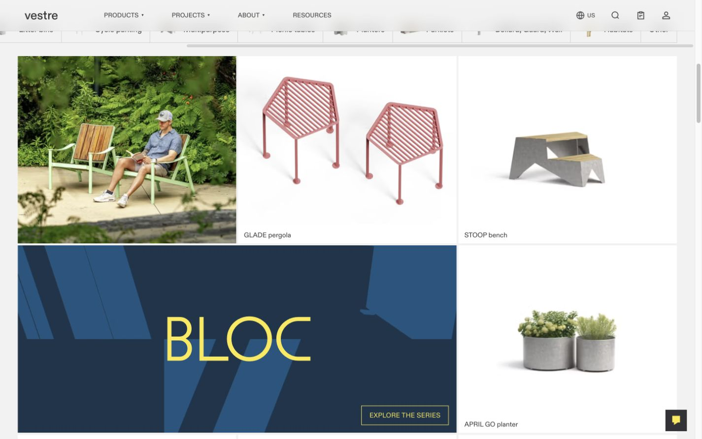
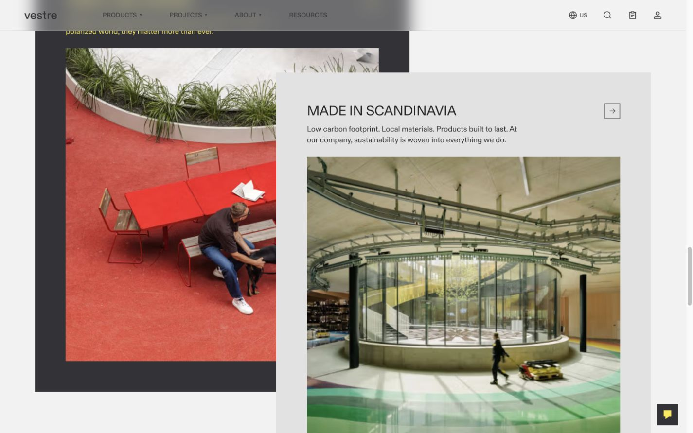
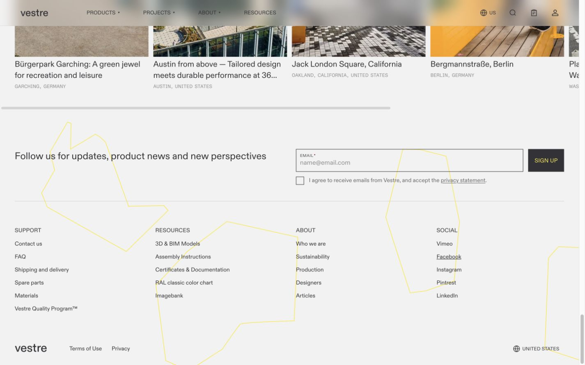
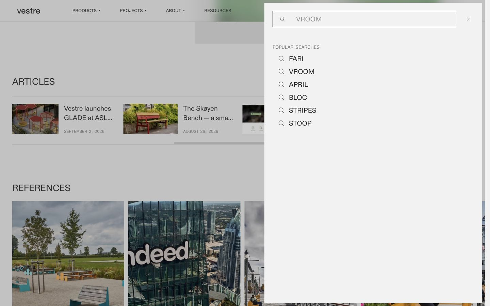
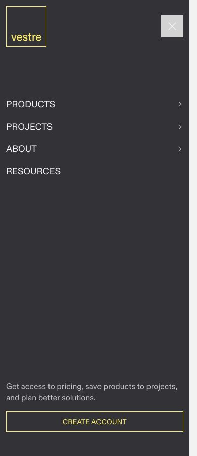
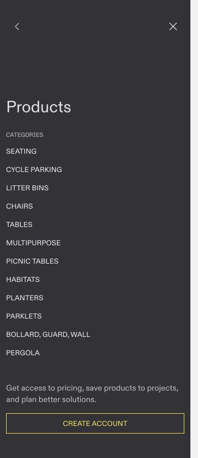

INSIGHT / 01
Motion showcase / study 05
Vestre.
Different clocks.
One composition.
Letters, layers and slow geometry.
Measured from the delivered page.
No autoplay. Begin a study when ready.
A catalog with several kinds of time.
Vestre combines a staged hero, reversible CSS controls, continuous media, native scrolling, scroll-driven card composition, and an unusually slow footer. Each runs on a different clock. The large moving furniture scenes are video content; the webpage separately animates their containers.
This version is Next.js/React, Motion, Tailwind/CSS modules, Embla Carousel and Base UI. It is the live US homepage reached by visiting vestre.com on 7 October 2026. The audit distinguishes source values, runtime observations and offline reconstructions.
| Motion family / showcase | Trigger | Clock |
|---|---|---|
| Hero layers ↘ | Mount | 800ms letters / 600ms support / 2400ms media |
| Compact header ↘ | Scroll thresholds | 320ms; 24px / 4px hysteresis |
| Desktop mega-menu ↘ | Hover / focus | 320ms opacity; no stagger |
| Underline, caret, market ↘ | Hover / open state | 150 / 200ms |
| Product image crossfade ↘ | Hover | 300ms opacity; no scale |
| Media hover variants ↘ | Hover | 300 / 500ms; 2–4% zoom |
| Automatic image gallery ↘ | Continuous + drag | 30px/s steady-state Embla |
| Overlapping story cards ↘ | Scroll progress | Linear mapping; no duration |
| Articles + references ↘ | Buttons / native scroll | Browser-controlled smooth + snap |
| Footer SVG track + groups ↘ | Continuous | 120s track; 225–600s rotations |
| Narrow menu + subpanel ↘ | Open / close / drill | 300ms panels; 150ms scrim |
| Search / help drawer ↘ | Open / close | 450ms open; 400ms normal close |
| Search hint characters ↘ | 3-second interval | 500ms + 20ms stagger |
| Floating greeting ↘ | Delayed + footer entry | 3s wait / 6s visible; 300 / 200ms |
Let the letters lead. Let the media settle.
The background starts at scale 1.12, opacity 0.6 and 2px blur, then settles over 2400ms with cubic Bézier (.22,1,.36,1). Each title character rises from 120% of its own height through a clipped word container over 800ms, using (.33,1,.68,1). There is no per-character opacity fade.
Character delays are 25ms × global non-space character index + 80ms × word index. Supporting copy begins 320ms after the last character starts, not after it finishes. For GLADE, eyebrow/description/CTA start at 420/520/620ms and each fade over 600ms. This creates overlap rather than a rigid title-then-copy sequence.
Interactive study / hero
Hero composition
Exact source curves and sequencing with substitute geometric artwork and fonts. Toggle the mask to see where the letters actually begin.
INTRODUCING
Shade designed for public life
Ready. Replay, scrub, or use the study controls.
Source: e693a111acb2493a.js
Extracted values / implementation notes
{
"media": {
"initial": {
"scale": 1.12,
"opacity": 0.6,
"blurPx": 2
},
"destination": {
"scale": 1,
"opacity": 1,
"blurPx": 0
},
"durationMs": 2400,
"ease": [
0.22,
1,
0.36,
1
]
},
"title": {
"fromY": "120% of character height",
"toY": 0,
"durationMs": 800,
"delayMs": "25 \u00d7 non-space character index + 80 \u00d7 word index",
"ease": [
0.33,
1,
0.68,
1
],
"mask": "Per-word overflow-hidden wrapper; 0.14em bottom padding + negative margin preserve descenders",
"opacity": "No per-character opacity fade"
},
"support": {
"baseDelayMs": "Last character start delay + 320",
"eyebrow": {
"delayForGLADE": 420,
"durationMs": 600
},
"description": {
"delayForGLADE": 520,
"durationMs": 600
},
"cta": {
"delayForGLADE": 620,
"durationMs": 600
},
"ease": "Motion easeOut; CSS ease-out cubic(0,0,.58,1) for these opacity tweens"
},
"trigger": "Component mount, not viewport entry or scroll progress",
"source": "e693a111acb2493a.js"
}Contract with hysteresis.
The fixed header compacts when scrollY exceeds 24px and stays compact until scrollY falls below 4px. That small dead zone prevents repeated toggles around one threshold. On desktop the header goes from 136px to 64px and the logo container from 96px to 44px. Narrow viewports start at 104px and an 80px logo.
The yellow block simultaneously shrinks to 16px tall and fades to zero. The wordmark remains. All those transitions take 320ms with (.3,.6,0,1). The compact fill rises to opacity 0.3 with static 16px backdrop blur. Cover detection and menu state separately choose header colors.
Interactive study / header
Header, logo and fill
Source dimensions and CSS easing. Scroll the focusable region to test the 24px/4px thresholds, or replay the contraction.
vestre
PRODUCTS / PROJECTS / ABOUTScroll a little.
Compact above 24px.
Expand below 4px.
Keep scrolling, then return to the top.
Ready. Replay, scrub, or use the study controls.
Source: b664f27371261aee.js · a0955bf8ab7df94c.css
Extracted values / implementation notes
{
"compactThresholdPx": 24,
"expandThresholdPx": 4,
"logic": "Compact once y>24; remain compact until y<4. Initial mount directly tests y>24. Header stays fixed.",
"durationMs": 320,
"ease": [
0.3,
0.6,
0,
1
],
"desktopHeightPx": [
136,
64
],
"narrowHeightPx": [
104,
64
],
"logoHeightPx": {
"desktop": [
96,
44
],
"narrow": [
80,
44
]
},
"yellowFillHeightPx": {
"desktop": [
96,
16
],
"narrow": [
80,
16
]
},
"yellowFillOpacity": [
1,
0
],
"wordmarkBottomRem": {
"desktop": [
0.835,
0.835
],
"narrow": [
0.7,
0.9
]
},
"compactBackground": "Fill opacity rises to 0.3; header backdrop-blur-lg =16px.",
"coverDetection": "Each marked hero rect top<header height and bottom>0, recomputed on scroll/resize.",
"source": "b664f27371261aee.js + a0955bf8ab7df94c.css"
}A fade, without a cascade.
Desktop navigation opens on hover or keyboard focus. The mega-menu container transitions opacity for 320ms using the header’s (.3,.6,0,1) curve. Its transition declaration includes transform, but the inspected states do not change transform. There is no item-by-item stagger.
The sheet is 40svh high, bounded by 288–600px. Closing removes the active content immediately while the empty container fades. That lifecycle matters: simply reversing an animation with its content still present would produce a different result. Pointer leave, focus leaving the header, Escape and route changes close it.
Interactive study / mega
Menu opacity and content lifecycle
The viewport-scaled height is compressed to fit this study. Switch to Close to inspect the immediate removal of content.
vestrePRODUCTS ⌄
PRODUCTS
Seating
Tables
Planters
Accessories
SERIES
GLADE
BLOC
APRIL
Ready. Replay, scrub, or use the study controls.
Source: b664f27371261aee.js
Extracted values / implementation notes
{
"durationMs": 320,
"ease": [
0.3,
0.6,
0,
1
],
"motion": "Opacity only in the inspected markup; transition lists transform but no changing transform endpoint",
"trigger": "Desktop hover or focus on navigation point; close on pointer leave, blur outside header, Escape, route change",
"height": "40svh, min 288px, max 600px",
"content": "Active nav content conditionally rendered. On close the content is removed immediately while container opacity transitions. No item stagger.",
"source": "b664f27371261aee.js"
}Small controls have their own tempo.
The navigation underline grows from 0% to 100% width in 150ms; the caret rotates 180° in 200ms. Colors and borders generally transition over 150ms. These use Tailwind’s default (.4,0,.2,1), a different curve from the header.
The market selector uses Base UI state attributes to animate opacity 0→1 and scale .95→1 over 150ms, with a top transform origin. The study shows its visual states without changing the site’s locale.
Interactive study / accents
Underline, caret and market popup
Scrub to compare the 150ms and 200ms clocks. These changes are coordinated by interaction state, not by an entrance timeline.
PRODUCTS ⌄
US / EN ⌄
Choose marketUnited States ✓EuropeUnited Kingdom
Ready. Replay, scrub, or use the study controls.
Source: b664f27371261aee.js · a0955bf8ab7df94c.css
Extracted values / implementation notes
{
"underline": {
"fromWidth": "0%",
"toWidth": "100%",
"durationMs": 150,
"ease": [
0.4,
0,
0.2,
1
],
"heightPx": 0.75
},
"caret": {
"rotationDeg": [
0,
180
],
"durationMs": 200,
"ease": [
0.4,
0,
0.2,
1
]
},
"colors": {
"durationMs": 150,
"ease": [
0.4,
0,
0.2,
1
]
},
"marketPopup": {
"opacity": [
0,
1
],
"scale": [
0.95,
1
],
"origin": "top",
"durationMs": 150,
"ease": [
0.4,
0,
0.2,
1
]
},
"source": "b664f27371261aee.js, 3462b53b9009288a.js, a0955bf8ab7df94c.css"
}Replace the context, not the scale.
Product cards stack two images. On hover the contained studio image fades out, the cropped lifestyle image fades in, and the caption fades out. All three opacity transitions take 300ms using Tailwind ease-out = (0,0,.2,1). The card does not enlarge its image.
The live Fari card reached opacity 0/1 for the two images and 0 for its caption during pointer hover. All eight current product cards carry this pattern. Shared-layout badge springs occur in delivered product modules, but no active homepage badges were observed; they are excluded here.
Interactive study / products
Studio → lifestyle crossfade
Abstract artwork substitutes for the source photography. Isolate either layer to see why a crossfade needs both images stacked in one frame.
FARI Product caption
Ready. Replay, scrub, or use the study controls.
Source: dddb31d6982abe9f.js · a38911ff8b6091cb.js
Extracted values / implementation notes
{
"durationMs": 300,
"ease": [
0,
0,
0.2,
1
],
"trigger": "Product card group:hover",
"mainImageOpacity": [
1,
0
],
"hoverImageOpacity": [
0,
1
],
"captionOpacity": [
1,
0
],
"behavior": "Contained studio image replaced by cropped lifestyle image. No scale tween here.",
"badges": "Shared-layout spring badge expansion is bundled, but no homepage feature badges were observed; excluded from active inventory.",
"source": "dddb31d6982abe9f.js / a38911ff8b6091cb.js"
}Four small zoom recipes.
The series videos scale 1→1.03 over 500ms. Article thumbnails start slightly cropped at 1.02 and reach 1.04 over 300ms. Project/reference images use 1→1.02 over 300ms. Mega-menu series thumbnails use 1→1.04 over 500ms, accompanied by a black overlay fading .25→.15 over 300ms. All use (.4,0,.2,1).
A fixed clipping frame makes these tiny changes readable without shifting surrounding layout. Reference-title underlining is immediate. Motion within BLOC and APRIL is looping video content; their CSS hover scale is a separate effect.
Interactive study / media
Compare the zoom variants
The same artwork makes the changes in scale, starting crop, duration and overlay easy to compare.
SERIES / BLOC
Ready. Replay, scrub, or use the study controls.
Source: b664f27371261aee.js · 288d2982d73cba8c.js · a038fdf1b6baa266.js
Extracted values / implementation notes
{
"series": {
"scale": [
1,
1.03
],
"durationMs": 500
},
"articles": {
"scale": [
1.02,
1.04
],
"durationMs": 300
},
"references": {
"scale": [
1,
1.02
],
"durationMs": 300
},
"megaSeries": {
"scale": [
1,
1.04
],
"durationMs": 500,
"overlayOpacity": [
0.25,
0.15
],
"overlayDurationMs": 300
},
"ease": [
0.4,
0,
0.2,
1
],
"source": "Live image/video classes; b664f27371261aee.js, 288d2982d73cba8c.js, a038fdf1b6baa266.js"
}Ambient video: what the DOM actually does
The three native video elements are muted, looping, playsInline and preload=metadata. An effect calls play() unless reduced motion matches. Their autoplay attributes are false, but their runtime paused states are false because JavaScript starts playback. Vimeo progressive media supplies the files; these are not ambient player iframes.
At the footer, all three remained playing thousands of pixels above the viewport. AmbientVideo has no viewport pause observer and reads reduced motion at effect time without a preference-change subscription. Video edits, object movement and furniture morphs belong to the media itself. This offline study does not load those videos.
Continuous travel is a carousel engine.
The image strip uses Embla with loop, dragFree and start alignment, plus Auto Scroll with speed 0.5 and startDelay 0. This is 0.5px per 1000/60ms engine simulation step: 30px per second at steady state, with render interpolation. It is not a refresh-rate-dependent “0.5px every display frame” animation.
Pointer down pauses automatic travel. After release, the engine waits for the drag to settle and starts again. stopOnInteraction is false, stopOnMouseEnter defaults false, and stopOnFocusIn defaults true; focusout restarts it. Looping uses slide recycling rather than a two-copy CSS marquee. Desktop tiles follow their cropped natural aspect; narrow tiles use 3:4.
The homepage component has no reduced-motion guard or viewport-gated stop. A separate product-page gallery does have a reduced-motion check, but that does not establish the homepage’s behavior.
Interactive study / gallery
A steady 30px per second
This 12-second, finite study reproduces steady travel with substitute tiles. It does not reproduce Embla’s slide recycling, drag inertia or focus lifecycle.
PUBLIC LIFE / 01
PUBLIC LIFE / 02
PUBLIC LIFE / 03
PUBLIC LIFE / 04
PUBLIC LIFE / 05
PUBLIC LIFE / 06
PUBLIC LIFE / 01
PUBLIC LIFE / 02
PUBLIC LIFE / 03
PUBLIC LIFE / 04
PUBLIC LIFE / 05
PUBLIC LIFE / 06
PUBLIC LIFE / 01
PUBLIC LIFE / 02
PUBLIC LIFE / 03
PUBLIC LIFE / 04
PUBLIC LIFE / 05
PUBLIC LIFE / 06
Ready. Replay, scrub, or use the study controls.
Source: 43f8342382a2e50d.js
Extracted values / implementation notes
{
"engine": "Embla Carousel + Auto Scroll",
"options": {
"loop": true,
"dragFree": true,
"align": "start",
"playOnInit": true,
"stopOnInteraction": false,
"speed": 0.5,
"startDelay": 0
},
"speedUnits": "0.5px per 1000/60ms simulation step =30px/s steady state; render interpolation between steps",
"defaults": {
"direction": "forward",
"stopOnMouseEnter": false,
"stopOnFocusIn": true
},
"interaction": "Pointer down stops automatic movement; after pointer up it waits for settle and restarts. Focus stops; focusout restarts.",
"layout": "Cropped natural aspect ratio on desktop; 3:4 tiles below 768px. Continuous loop with slide recycling, not CSS translate(-50%).",
"reducedMotion": "No guard in this homepage gallery component. A separate product-page carousel has one, but is outside this audit.",
"visibility": "No viewport-gated start/stop in the component; motion was observed while offscreen.",
"source": "43f8342382a2e50d.js"
}Scroll composes the two cards.
At ≥768px, both cards share a scroll target. Motion’s offsets are ["start 125vh", "end 35vh"]: progress begins when the target’s top meets a line 1.25 viewport heights down, and ends when its bottom meets a line .35 viewport heights down. The values interpolate linearly and clamp at the ends.
The left/right horizontal transforms are +40%/−40% at progress 0 and both reach zero by .42. Vertically, +22px/−22px reach zero at .32, then separate to −40px/+36px at progress 1. The layout itself overlaps the columns and places the second card 192px lower. The percentages for x refer to each transformed element’s width.
Below 768px, each card has its own target and offsets ["start 105vh", "start 70vh"]. The first enters from −14%, the second from +14%, both reaching zero. They therefore start at different page positions. useReducedMotion removes the transforms. There is no authored duration, spring or easing curve on this mapping.
Interactive study / overlap
Horizontal resolve + vertical separation
Scrub actual progress. Replay advances progress illustratively over 10 seconds; the source is driven by scroll position. Narrow mode uses a shared teaching slider for two independently triggered source targets.
Public belonging
Made in Scandinavia
Ready. Replay, scrub, or use the study controls.
Source: 43f8342382a2e50d.js
Extracted values / implementation notes
{
"desktopBreakpointPx": 768,
"desktopOffsets": [
"start 125vh",
"end 35vh"
],
"desktop": {
"xProgress": [
0,
0.42,
1
],
"leftX": [
"40%",
"0%",
"0%"
],
"rightX": [
"-40%",
"0%",
"0%"
],
"yProgress": [
0,
0.32,
1
],
"leftYpx": [
22,
0,
-40
],
"rightYpx": [
-22,
0,
36
]
},
"narrowOffsets": [
"start 105vh",
"start 70vh"
],
"narrow": {
"leftX": [
"-14%",
"0%"
],
"rightX": [
"14%",
"0%"
],
"independentTargets": true
},
"mapping": "Linear, clamped interpolation of live scroll progress; no fixed duration or ease curve",
"reducedMotion": "useReducedMotion returns undefined transforms, preserving static layout",
"source": "43f8342382a2e50d.js"
}Sometimes native scrolling is the animation.
Article and reference arrows add or subtract one container.clientWidth from scrollLeft. CSS supplies smooth scrolling, x-axis proximity snapping and snap-start children; the browser chooses the duration and interpolation, then clamps and snaps the destination. The live article row moved from 0 to 724px with a 725px maximum.
Scroll state updates in requestAnimationFrame and uses a 1px boundary tolerance. ResizeObserver recalculates overflow. Arrows disable at boundaries and disappear when no overflow exists. Article rows become a static vertical list of the first four below 768px; references continue horizontally. Coarse pointers hide the arrow controls. The demo stays horizontal to make the native mechanism inspectable.
Interactive study / rows
Let the browser scroll and snap
Native smooth scrolling and proximity snapping. The measured scroll position comes from this browser; no duration or easing is invented.
INSIGHT / 02
Places for everyone
INSIGHT / 03
Design with purpose
INSIGHT / 04
A lasting material
INSIGHT / 05
Made for the outdoors
INSIGHT / 06
Better together
Ready. Use buttons, trackpad, or the focusable row.
Source: 43f8342382a2e50d.js
Extracted values / implementation notes
{
"engine": "Native scrollLeft + CSS scroll-behavior:smooth",
"buttonDistance": "\u00b1container.clientWidth, then browser clamps/snaps",
"snap": "x proximity; children snap-start; custom scroll-padding",
"duration": "User-agent controlled. No author-defined duration/easing.",
"boundaryEpsilonPx": 1,
"resize": "ResizeObserver recalculates overflow; scroll state updates in requestAnimationFrame",
"responsive": "Articles below 768px become a static vertical list of the first four entries. References retain native horizontal scrolling. Navigation buttons are hidden for coarse pointers.",
"source": "43f8342382a2e50d.js"
}Two axes, two states.
The narrow menu is a Base UI Dialog with keepMounted portal content. The full-screen sheet slides down from −100% y to zero over 300ms with (0,0,.2,1). Its backdrop fades over 150ms using (.4,0,.2,1). Links arrive together.
Products drill-down sends the root panel from x=0 to −100% and the submenu from +100% to zero over 300ms with the same slide curve. Back reverses them. Icons and retained submenu content swap discretely. This was inspected at 390px with a fine pointer; physical touch gestures were not tested.
Interactive study / mobile
Open, close, drill and return
The source’s viewport-sized menu is shown in a contained device. Choose a state transition and replay it.
VESTRE / NARROW
Furniture for public life.
PRODUCTS →
PROJECTS →
ABOUT →
← BACK / PRODUCTS
Seating
Tables
Planters
Ready. Replay, scrub, or use the study controls.
Source: b664f27371261aee.js
Extracted values / implementation notes
{
"openClose": {
"translateY": [
"-100%",
"0%"
],
"durationMs": 300,
"ease": [
0,
0,
0.2,
1
]
},
"backdrop": {
"durationMs": 150,
"ease": [
0.4,
0,
0.2,
1
]
},
"drillDown": {
"rootX": [
"0%",
"-100%"
],
"submenuX": [
"100%",
"0%"
],
"durationMs": 300,
"ease": [
0,
0,
0.2,
1
]
},
"lifecycle": "Base UI Dialog; portal keepMounted. Escape closes; Back restores root. Icon/content swaps are discrete. No link cascade.",
"source": "b664f27371261aee.js"
}A fast start and a soft landing.
Search and floating help/project controls use a side drawer. Its closed transform is 100% of its width plus viewport padding: 8px normally, 10px in the WebKit rule. Opening takes 450ms with (.32,.72,0,1). The backdrop follows the same transition; its destination alpha is .2 in light mode or .7 in the OS dark rule.
Closing uses 400ms multiplied by --drawer-swipe-strength. The inspected ordinary close uses strength=1, so 400ms. While swiping, translation follows displacement directly with transitions disabled; release timing depends on swipe strength. The study covers ordinary open/close, not the untested physical swipe.
Interactive study / drawer
Drawer + scrim
Compare the 450ms opening and 400ms ordinary closing. Select a backdrop theme; the popup artwork remains a teaching substitute.
VESTRE / SEARCH
Explore public life.
SEARCH / CLOSE ×
What are you looking for?
Search products, stories and places
Try GLADE, VROOM or Sustainability
Ready. Replay, scrub, or use the study controls.
Source: 706408b83b455d97.css · 2ed703a53512c6bb.js
Extracted values / implementation notes
{
"openDurationMs": 450,
"closeDurationMs": "400 \u00d7 --drawer-swipe-strength; ordinary close at strength=1 is400ms",
"ease": [
0.32,
0.72,
0,
1
],
"closedX": "100% of popup width + viewport padding",
"paddingPx": 8,
"webkitPaddingPx": 10,
"backdropOpacity": {
"light": 0.2,
"dark": 0.7
},
"swipe": "Direct displacement, transition disabled while swiping. Release duration follows swipe strength. Physical touch swipe not tested.",
"usedBy": "Search and floating help / project controls",
"source": "706408b83b455d97.css + 2ed703a53512c6bb.js"
}The input becomes a tiny type stage.
With multiple hints, an empty query and reduced motion off, AnimatedPlaceholders advances every 3000ms. AnimatePresence overlaps outgoing and incoming strings. Characters enter from +150% y and leave toward −150%, taking 500ms with (.33,1,.68,1). Delay is 20ms × non-space character index + 10ms × word index.
The clipped input window hides both outside positions. Typing a query hides the animated hint immediately. Reduced motion selects a static first hint and skips the interval. The live search cycled between Sustainability and VROOM. This study isolates one replacement; it does not run an automatic timer or send your query anywhere.
Interactive study / placeholder
Outgoing and incoming letters
Watch both strings in the same clipped window, or hide the mask. The stage uses the observed strings with substituted type.
SEARCH PLACEHOLDER
Ready. Replay, scrub, or use the study controls.
Source: b664f27371261aee.js
Extracted values / implementation notes
{
"intervalMs": 3000,
"durationMs": 500,
"delayMs": "20 \u00d7 non-space character index + 10 \u00d7 word index",
"enterY": [
"150%",
0
],
"exitY": [
0,
"-150%"
],
"ease": [
0.33,
1,
0.68,
1
],
"mask": "Single clipped input window",
"lifecycle": "AnimatePresence overlaps outgoing and incoming strings. Query text hides placeholder; reduced motion selects a static first string and skips interval.",
"source": "b664f27371261aee.js"
}A delayed invitation, then quiet.
The floating launcher waits 3000ms before showing its greeting, keeps it open for 6000ms, then closes around 9000ms. A grid track transitions from 0fr to 1fr over 300ms with (0,0,.2,1); its child clips overflow. This sizes the text without guessing a fixed text width. The 44px icon stays available.
An IntersectionObserver watches the site footer. When it intersects and the drawer is closed, the launcher fades out over 200ms with Tailwind’s default curve and stops receiving pointer input. It does not hide an already open drawer. The live footer inspection confirmed launcher opacity zero.
Interactive study / help
Wait, expand, hold, collapse
Scrub directly to 3000ms or use Inspect greeting to skip the initial wait. Footer visibility is a separate state transition.
ONE-TIME GREETING / LAUNCHER
Request a quote or talk to us↗
3s wait → 6s visible → close
Ready. Replay, scrub, or use the study controls.
Source: b664f27371261aee.js
Extracted values / implementation notes
{
"greetingWaitMs": 3000,
"greetingVisibleMs": 6000,
"gridColumns": [
"0fr",
"1fr"
],
"durationMs": 300,
"ease": [
0,
0,
0.2,
1
],
"footerFadeMs": 200,
"footerFadeEase": [
0.4,
0,
0.2,
1
],
"footerTrigger": "IntersectionObserver on data-site-footer. Closed launcher hides while footer intersects.",
"source": "b664f27371261aee.js"
}How to build with this vocabulary.
Choose the mechanism to fit the clock. CSS transitions handle reversible hover and menu states. Motion is useful for mount choreography, character staggering, AnimatePresence and scroll transforms. Embla handles drag, inertia and loop recycling. Native scrolling provides the row’s behavior without a custom tween. None requires Framer Motion to animate a simple opacity, but coordination and lifecycle are where a motion library earns its place.
| Clock | Mechanism | Useful implementation lesson |
|---|---|---|
| Mount | Hero media + letters + support | Calculate delays from the last character’s start. Overlap the sequences. |
| Interaction state | CSS transitions / Base UI | Animate fixed containers. Preserve dismissal, focus and content lifecycle. |
| Scroll position | Motion useScroll / useTransform | Map clamped progress; do not replace with a one-shot entrance. |
| Continuous time | Embla + CSS footer loops | Use an engine for drag/recycling; a two-copy track for the decorative repeat. |
| Browser physics | Native smooth scroll + snap | Do not pretend its duration is an authored constant. |
| Media time | Native video | Keep footage movement separate from the container’s DOM effects. |
Keep transforms and opacity small and purposeful. Hover zooms are only 2–4%; character movement is clipped; cards converge before their vertical separation becomes noticeable. The hero’s 2px blur and header’s backdrop blur still deserve measurement, and height/grid transitions can require layout. Source inspection alone cannot certify a compositor path or smooth frame rate.
Improve the lifecycle when rebuilding. Pause videos and continuous galleries when outside the viewport or document is hidden. Subscribe to preference changes. Make hover information equally available to keyboard/touch users. Give reduced motion a stable destination. This showcase applies those teaching safeguards globally; the original has selective guards, not one blanket policy.
| Original component | Reduced-motion evidence |
|---|---|
| Overlapping cards | useReducedMotion removes transforms. |
| Footer SVG | CSS disables track and shape animation. |
| Animated placeholder | Static first hint; no interval. |
| Ambient video | Preference checked at effect start; no change subscription. |
| Hero, header, navigation, product hovers, homepage gallery, greeting | No component-local reduced-motion guard found for the documented behavior. OS preference changes were not exercised on the live site. |
What was verified, and what is a reconstruction.
The investigation combined live scrolling, pointer hover, keyboard focus, search/menu dismissal, computed styles, DOM geometry and the delivered first-party JavaScript/CSS. Fifty-three public asset files are archived with URLs, byte counts and SHA-256 hashes. Prefetched product modules are present in that archive; presence in a bundle does not prove an effect runs on the homepage.
Live checks confirmed the header endpoints, initial hero offsets, image-layer opacities, series scale, card transforms, native row travel, narrow menu panels, drawer easing, placeholder changes, footer animation rates, footer-triggered help hiding and offscreen video playback. Screenshots document visible states; they are not timing traces. Exact durations and stagger formulas come from the source and matching computed styles.
The offline regions reconstruct the animation rules with substitute artwork, fonts and dimensions, except for the original decorative footer paths. They are teaching models, not pixel-identical page copies. The gallery study does not implement Embla inertia; narrow card progress is jointly scrubbed for explanation; row easing remains browser-native. Physical touch swipes, account/forms, product configurators, full navigation transitions and frame-time/FPS traces are outside this homepage audit.
No general scroll-triggered fade/rise was observed on the static intro or article/reference wrappers. No active homepage path morph was found. The homepage is relatively restrained: precision comes from matching each mechanism to its role, not from adding a reveal to every block.
Structured motion valuesSource symbol indexAsset manifest + hashesLive runtime valuesShowcase verificationFiles and rebuild instructions







